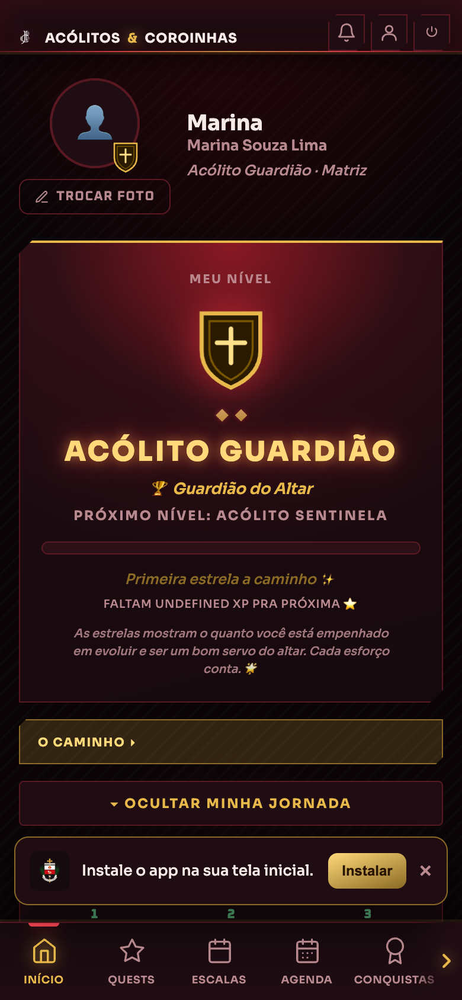
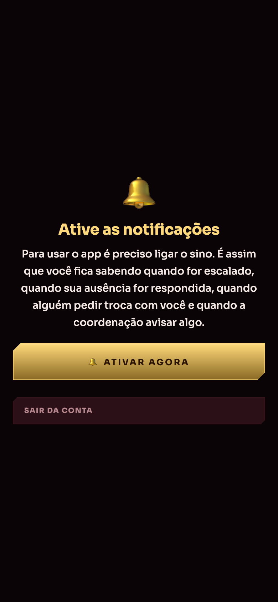
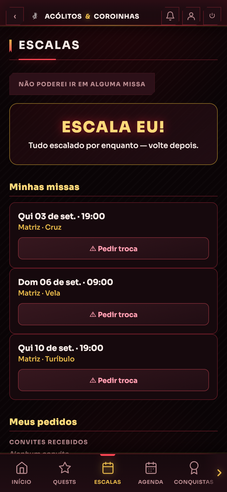
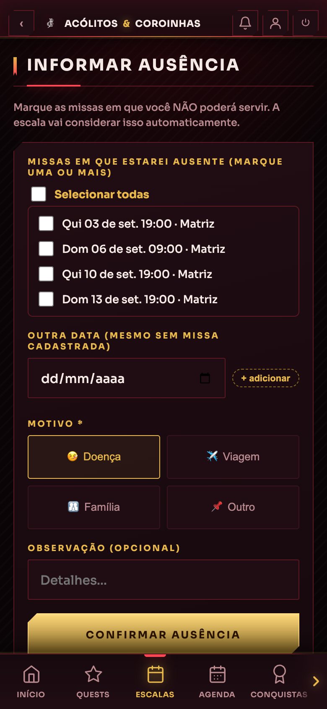
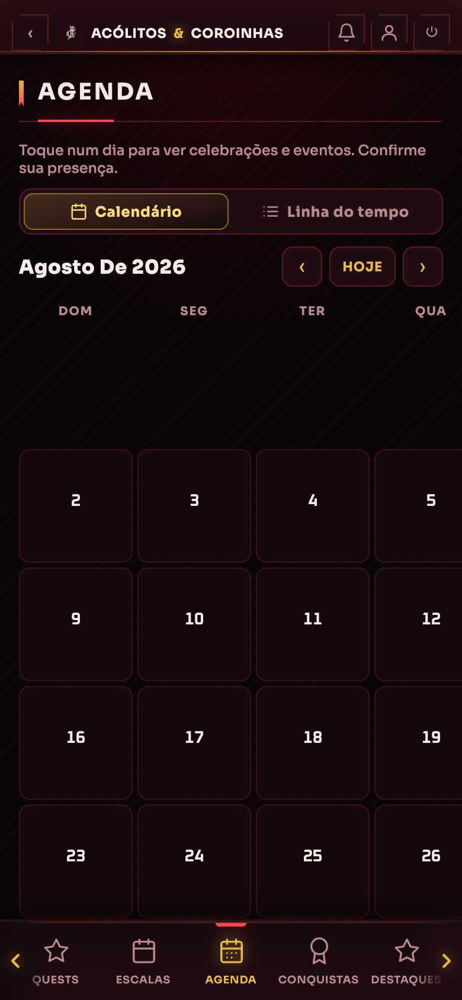
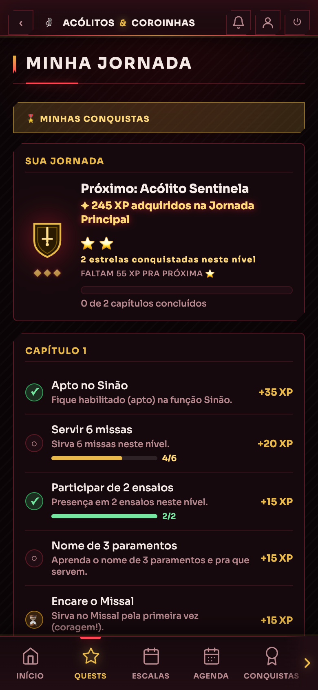
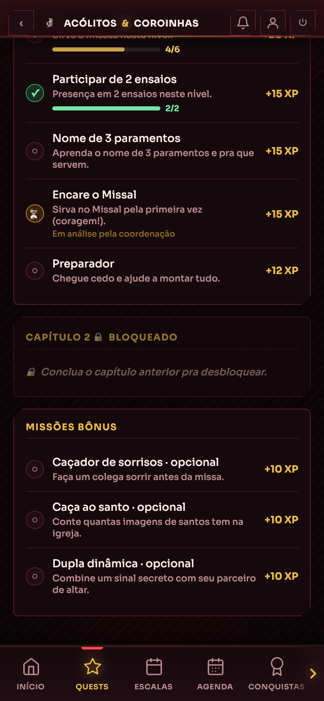
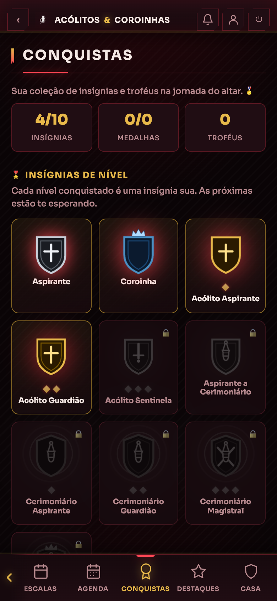
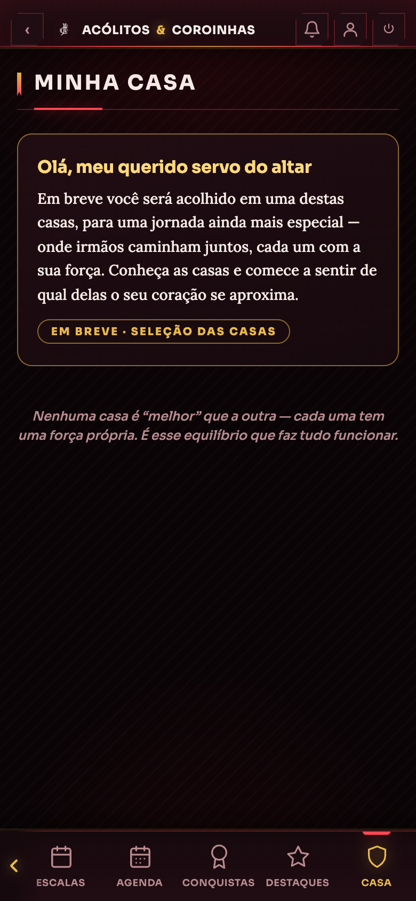

É onde a pastoral vive o dia a dia: você vê quando vai servir, avisa quando não puder ir, acompanha a sua jornada — as funções que já sabe fazer e as que ainda vai aprender — e recebe no celular todo aviso importante.
Ele não substitui a coordenação nem o grupo do WhatsApp. Ele resolve a parte que sempre se perdia: quem serve em qual missa, e quem avisou que não vai poder ir.
Não precisa baixar nada de loja nenhuma:
A pastoral entregou uma folha com o nome de cada pessoa e o usuário dela. Procure ali o nome completo do seu filho ou da sua filha.
| Nome | Quem responde por ela | Usuário | Senha |
|---|---|---|---|
| Ana Caroline Carli | Márcia Batista Barbosa Carli | anacarli | coroinha2026 |
A coluna do meio existe para os nomes que se repetem — há 14 "Maria" e 8 "Miguel" na pastoral.
Assim que você entra, aparece uma tela com o primeiro nome da criança pedindo uma senha nova. Escreva a mesma senha nas duas caixas e toque em Guardar a minha senha.
Depois de guardar, o aplicativo recarrega sozinho e você já está dentro. Essa tela não aparece nunca mais.
Foram criadas 138 contas de uma vez, todas com a mesma senha impressa. Enquanto uma criança não trocar a dela, quem tiver a folha pode abrir a conta dela. A troca fecha essa porta.
Assim ele ganha um ícone como qualquer outro aplicativo, abre em tela cheia e fica fácil de achar. O próprio aplicativo oferece isso num balão embaixo da tela.

Abrindo o aplicativo, aparece esta tela pedindo para ligar o sino. Assim como a senha, ela não deixa passar.

Quem chega na pastoral passa por seis etapas. Na tela inicial há um bloco chamado "Sua Integração na Pastoral", que mostra em qual delas você está.
Andar de uma etapa para outra é a coordenação que faz — você não precisa pedir. Quando muda, o aplicativo mostra.
É aqui que a pastoral acontece. A tela tem quatro partes:
Um cartão para cada missa em que você foi escalado, com o dia, o horário, a comunidade e a sua função — Cruz, Vela, Turíbulo, e assim por diante. Se não puder ir naquela missa específica, o próprio cartão traz ⚠ Pedir troca.
As vagas que ninguém pegou ainda. Quando houver alguma, ela aparece aqui para você se oferecer. Quando não houver, diz "Tudo escalado por enquanto — volte depois".
Os convites recebidos (alguém pediu troca com você) e os pedidos que você fez.
A escala inteira da pastoral. Toque numa missa para ver quem está escalado nela.

Ninguém está livre de um imprevisto, e a pastoral não trata isso como falta grave — trata como aviso. O que faz falta é o silêncio: uma vaga que ninguém sabia que ia ficar vazia.
A coordenação recebe o aviso e cuida da vaga. Quando a sua ausência for respondida, chega um aviso no seu celular.
Quando alguém avisa que não vai, a vaga fica aberta e outra pessoa pode cobrir. Quem cobre recebe a confirmação no celular. É assim que a escala se conserta sozinha.

A Agenda mostra o mês da pastoral. Toque num dia para ver as celebrações e os eventos daquela data.
Nos eventos aparece essa pergunta. Responder ajuda quem organiza a saber quanta gente esperar — quantas cadeiras, quanto lanche, se vale manter a data.
Alguns eventos são convocados: a coordenação chama um grupo específico, por nível (só os coroinhas, por exemplo) ou por time da pastoral. Quando você é convocado, o aviso chega.
Nos ensaios e encontros há chamada de presença. Quem conduz marca quem veio, e isso entra no seu histórico.

Na barra de baixo, QUESTS abre a Minha Jornada. É a tela que responde "o que eu já sei fazer, e o que falta para o próximo nível".
As quests vêm em capítulos. Cada quest tem o título, o que é preciso fazer e quanto XP ela vale. À esquerda, a bolinha diz o estado:
| Sinal | Quer dizer |
|---|---|
| ✓ verde | Concluída. |
| ○ vazia | Ainda por fazer. |
| ⏳ ampulheta | Você mandou, e está em análise pela coordenação. |
Quando a quest é de contar (servir missas, ir a ensaios), aparece uma barrinha de progresso — 4/6 quer dizer quatro de seis.

O Capítulo 2 aparece 🔒 bloqueado até você terminar o primeiro: "Conclua o capítulo anterior pra desbloquear." Não é castigo — é a ordem em que as coisas se aprendem no altar.
Fora dos capítulos existem as bônus, marcadas como opcional. Elas não são exigidas para subir de nível; existem porque servir também é alegre:
E há as de surpresa, que aparecem sem avisar e valem bem mais — uma delas se chama NPC Secreto, e a pastoral não conta o que é.
Na mesma tela você pode pedir para ser habilitado numa função — Cruz, Vela, Turíbulo, Missal. O aplicativo pede que você explique como se serve nela. Não é burocracia: é como se mostra que aprendeu de verdade, e não só que quer o título. A coordenação lê e responde.

| Nível | O que é |
|---|---|
| Aspirante | Chegou agora e está conhecendo. |
| Coroinha | Já serve, nas funções da idade dele. |
| Acólito Aspirante | Começou o caminho do acólito. |
| Acólito Guardião | Firme nas funções, ajuda os menores. |
| Acólito Sentinela | Referência no altar. |
| Cerimoniário (e acima) | Conduz a celebração e forma os outros. |
"Sua coleção de insígnias e troféus na jornada do altar." Guarda as 🎖️ insígnias de nível, os 🏆 troféus de temporada e as 🏅 medalhas. Quando você alcança um nível novo, o aplicativo faz uma festa na tela, com "NÍVEL ALCANÇADO", e dá para compartilhar com a família.
A pastoral é dividida em casas, cada uma com o seu brasão. Você vê a sua casa, o brasão — que passa a aparecer no seu retrato pelo aplicativo — e os irmãos da sua casa.
"Um reconhecimento à dedicação de cada um." Mostra quem tem estado presente na temporada — não é competição de quem é melhor.


| O que acontece | O que fazer |
|---|---|
| "Usuário ou senha inválidos" na primeira vez | Confira a linha da folha (nomes se repetem muito), escreva tudo minúsculo e sem espaço no fim. A senha é coroinha2026. |
| Esqueci a senha que criei | Fale com a coordenação. Ela consegue devolver o acesso. |
| A tela de senha fica voltando | A senha nova não pode ser coroinha2026, precisa ter 6 letras ou números, e as duas caixas têm de ser iguais. A frase em vermelho diz qual das três faltou. |
| Não consigo passar da tela do sino | Se você tocou em "Não Permitir", o celular não pergunta de novo. Vá aos Ajustes do celular, ache o aplicativo e ligue as notificações. No iPhone, confira antes se ele está instalado na tela de início — sem isso não funciona. |
| Não chega aviso nenhum | Abra pelo ícone instalado, não pelo navegador. Confira as notificações nos Ajustes. |
| O aplicativo parece desatualizado | Feche de vez (não só minimize) e abra outra vez pelo ícone. |
| Meu filho aparece duas vezes, ou o nome está errado | Avise a coordenação. Isso se conserta no cadastro, e é melhor cedo. |
| Não vejo as telas que outra pessoa vê | É assim mesmo: o aplicativo mostra a cada um o que lhe cabe. Um coroinha não vê as telas da coordenação. |
| Tenho dois filhos na pastoral | Quando estão cadastrados juntos, a mesma conta alterna entre eles — sem sair e entrar de novo. |
Fale com a coordenação da pastoral no WhatsApp: